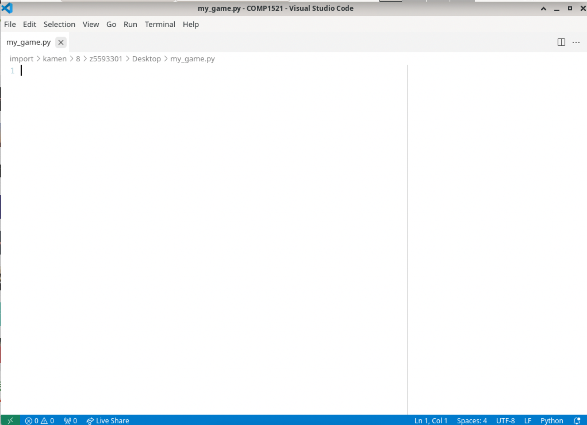

Task 1: Set Up
Goal: Create a file and initialise pygame.
Task 1.1: Make Python File
-
In VS Code, click on File and then New File

You should see something like this pop up after you click 'New File'

-
Enter the name of your file (e.g. 'my_game.py')
Note: It’s super important to include .py at the end of the file name so VS Code knows it's Python code!
-
Press 'ENTER' and something looks like this should pop up

-
Press 'Desktop' and then 'Create File' to save your file to the Desktop


- Congratulations! You have created you python file! You can now start coding :)

Task 1.2: Import Pygame
Now that you have created your Python file, it's time to start setting it up for Pygame!
-
At the very top of your Python file, you need to import the Pygame library.
-
Initialising Pygame
You should now see something like this:

Task 2: Creating a game screen
Goal: Create a visible game screen with a background, title, icon and a game loop.
Task 2.1: Create Game Screen
Before we make our game we need to set up the screen to display it!
-
Create some variables that will hold the width and the height. 800 pixels wide and 600 pixels tall
E.g. A screen that is 100 pixels wide and 200 pixels could have these variables:
WIDTH = 100 HEIGHT = 200 -
Create a window of that size and assign it to screen like so:
pygame.display.set_mode(WIDTH, HEIGHT)
üìù Note
Running your game will cause your program to crash. You must complete Task 1.2 before you can see a screen when you run your pygame.
üö© Checkpoint
- Two variables for width and height
- A screen object created using Pygame and your variables
Task 2.2: Create Game Loop
- Use a variable called
runningand set it toTrueat the start - Make a
whileloop which will keep looping while the game is running. - Inside your
while running:loop, loop through each event type and check quit the game if the event type is quit. - Inside your
while running:loop, update the display
üí° Hint
- Make a for loop:
for event in pygame.event.get() - If the player closes the game
event.type == pygame.QUIT, you need to set a certain variable to False
- At the end of your while loop, refresh the screen with
pygame.display.update()
üö© Checkpoint
- No crashing! Your window should stay open until you click the X!
- You should see something like this:

Task 2.3: Add Background Image
- Save the image path as a variable: e.g.
background_image = "images/background/wooden_floor.jpeg" - Then load it using
pygame.image.load(background_image) - Make sure the background fits the window Use
pygame.transform.scale(...) - draw the background onto the screen use
screen.blit(...)
üö© Checkpoint
- A
background_imagevariable (path to the image) - A
backgroundvariable (the scaled loaded image) - A
screen.blit(variable, coordinate)line inside yourwhile running:loop - A background showing up instead of a black screen!
Task 2.4: Add a Game Title and App Icon
- Change the text that appears at the very top of your game window use a Pygame function
pygame.display.set_caption(). - load an image using
pygame.image.load(...) - use Pygame function
pygame.display.set_icon()to set the image. - The path to your icon should be something like this: "images/game_icon.png"
üö© Checkpoint
- Have your customised game title
- Have your customised icon
Task 3: Making a player
Goal: Make a player that can move and be seen on the screen.
Task 3.1: Create a Player Class
- We'll create a
Playerclass to store: The player’s position, size and image (sprite)
üí° Hint
- Use the
classkeyword - The class name should start with a capital letter.
- Inside your
Playerclass, create an__init__()method.
üí° Hint
- Use the
defkeyword to define the method. - The
__init__()method should only haveselfas its input.
-
Inside your
__init__()method, create the following properties:position_x-> set it to 0 for nowposition_y->set it to 0 for nowsize-> (width, height)image-> file name
-
Load and Scale the Player’s Sprite inside your
__init__()method:
üí° Hint
- Use
pygame.image.load(...)to load the player image file. - Use
pygame.transform.scale(...)to resize the player’s image to the correct size.
Checkpoints
üö© Checkpoint
- A
Playerclass - An
__init__()method inside the class - Player properties:
position_xposition_ysizeimagesprite
Task 3.2: Create an instance of player
- Outside of your class definition (in your main code), create a new player object!
üí° Hint
- Use the class name with brackets
()to create a new object. - Save it into a variable called
player.
- After you create the player instance, print out the player’s important properties to check they were created correctly.
üí° Hint
- Print the player's
sprite. - Print the player's
position_x. - Print the player's
position_y. - Print the player's
size.
Checkpoints
üö© Checkpoint
- A player object stored in a variable called
player. - Printouts in the terminal showing the player's properties.
Task 3.3: Create the draw method
- Create a new method called
draw.
üí° Hint
- Use the
defkeyword. - It should be written inside your Food class (at the same indentation level as
__init__()). - This method won’t take any arguments (only
self). - This method will draw the food onto the screen.
üí° Hint
- Use
screen.blit(...)to draw. - The first thing you want to draw is the sprite.
- The position to draw at is
(position_x, position_y).
Checkpoints
üö© Checkpoint
- A
draw()method inside your Food class which knows how to: - Draw the sprite.
- Place it at the correct position.
Task 3.4: Create the move method
- Inside your
Playerclass, define a new method calledmove().
üí° Hint
- Use the
defkeyword. - Remember to give it just one parameter:
self.
-
Use
pygame.key.get_pressed()to check which keys are currently being held down and save the result into a variable -
Check if the player is pressing: | Key | Action | |:----|:-------| |
Wkey | Move up | |Akey | Move left | |Skey | Move down | |Dkey | Move right |
üí° Hint
- If the
Wkey is pressed, decrease the y position. - If the
Skey is pressed, increase the y position. - If the
Akey is pressed, decrease the x position. - If the
Dkey is pressed, increase the x position.
- change the player's image depending on the direction they are moving
üí° Hint
- When moving up, change the image to
poco_up.png. - When moving down, change the image to
poco_down.png. - When moving left, change the image to
poco_left.png. - When moving right, change the image to
poco_right.png.
Checkpoints
üö© Checkpoint
- A
move()method inside yourPlayerclass. - The method checks which keys are pressed.
- The method updates the player’s
position_xandposition_y. - The player image changes when moving!
Task 3.5: Fix duplicating Poco
- Inside your
while running:game loop, at the very start of the loop (before drawing the player or foods), draw the background again over the whole screen.
Hint:
üí° Hint
- Use
screen.blit(,).
Checkpoints
üö© Checkpoint
- Now Poco will move smoothly without leaving any clones behind.
Task 4: Adding other entities
Goal: Add multiple entities that are related to each other. In this example we have added food, but you are free to add what you wish, as long as it is appropriate.
Task 4.1: Create a Food Class
- Start by creating a new class called
Food. Eg:
class Food:
- Inside your
Foodclass, create a special function called__init__.
üí° Hint
- Use the
defkeyword to define the method. - The
__init__method should accept 4 inputs: nameimageposition_xposition_y- Save each of these inputs into the object using
self.
- Inside your
__init__()method, set a default size for your food. - Still inside the
__init__()method, load the image file using Pygame'simage.loadfunction. - Scale the loaded image to the correct size using Pygame's
transform scalefunction. - Save the final scaled image into the object (e.g.,
self.sprite).
Checkpoints
üö© Checkpoint
- A
Foodclass (or a class of things you want to have). - An
__init__()method that: - Saves the name, image, and position.
- Sets a default size.
- Loads and scales the sprite.
- A ready-to-use object for your game!
Task 4.2: Create a Food Dictionary
- Create a dictionary called
foods, this dictionary will hold all the food items you want to appear in your game.
üí° Hint
- Use curly braces
{}to create a dictionary. - Save it in your main code before your game loop starts.
2. Inside your dictionary, add entries for each food you want
üí° Hint
- Each key should be the name of the food (like
"banana","grapes", etc.). - Each value should be a list that contains:
- The path to the image file.
- The x position.
- The y position.
Example structure:
"food name": ["path/to/image.png", x_position, y_position]
Task 4.3: Initialise Active Foods List
- Create a new empty list called
active_foods, and this list will store all the Food objects you create. - Write a
forloop that goes through every item in yourfoodsdictionary. In each loop, you will create a new Food object.
üí° Hint
- Use
.items()to loop through both the key and value. - The key will be the name of the food.
- The value will be a list containing:
[image path, x position, y position]
3. Create a New Food Object for Each Item
üí° Hint
key-> namevalue[0]-> image pathvalue[1]-> x positionvalue[2]-> y position
üö© Checkpoint
- An empty
active_foodslist is created. - A loop that:
- Goes through every food in your dictionary.
- Creates a Food object.
- Adds it into the
active_foodslist.
Task 4.4: Create Food Draw Method
- Create a new method called
draw.
üí° Hint
- Use the
defkeyword. - It should be written inside your Food class (at the same indentation level as
__init__()). - This method won’t take any arguments (only
self). - This method will draw the food onto the screen.
- Draw the Sprite Onto the Screen
üí° Hint
- Use
screen.blit(...)to draw. - The first thing you want to draw is the sprite (image).
- The position to draw at is
(position_x, position_y).
üö© Checkpoint
- A
draw()method inside your Food class which knows how to: - Draw the sprite.
- Place it at the correct position.
Task 4.5: Draw Active Foods in Game Loop
Now that each Food knows how to draw itself, it's time to actually draw all the food onto your game window during the game!
- You will loop through all active foods inside your
while running:game loop.
Step 1: Loop Over active_foods
Draw each active food item onto the screen.
üí° Hint
- Create a loop inside your
while running:loop to iterate over theactive_foodslist. - Call the food’s
draw()method.
Step 2: Drawing and Interaction
Check whether the player has interacted with the food.
üí° Hint
- Inside the
forloop: - Use the player's method to check for interaction with the food.
Checklist
üö© Checkpoint
- A
forloop inside the main game loop. - You can interact with the food.
- All food is drawn onto the screen.
- All your food is visible.
Task 5: Collision
Goal: Detect whether the player is colliding with any of the food.
Task 5.1: Create a hitbox for both the players and the foods
- Create an extra property in the player and food class. Use the .get_rect().move() function to create a rectangle that moves with the class' sprite.
- Create a method called
update(self)in the player class. Copy the property you just wrote into this method. - Call the player update method in the main game loop, just underneath
player.draw()
üí° Hint
sprite.get_rect()creates a rectangle the size of the image.move()moves whatever it's attached to to an x and y coordinate- To combine these into a hitbox you can have:
self.hitbox = self.sprite.get_rect().move(self.position_x, self.position_y)
Task 5.2: Check whether two hitboxes are colliding
- Create a property called
interact_foods(self, food)in the food class - Use the colliderect to check whether the rectangular hitboxes are colliding
- If they are colliding, remove food from the active_foods list
üí° Hint
- Check if the player hitbox is colliding with the food hitbox:
collision = self.hitbox.colliderect(food.hitbox) - The collision variable is True if the hitboxes are colliding and False if not
Task 6: Finishing the game.
Goal: Add a score, a win condition. Finishing this task finishes the basic features of your game.
Task 6.1: Create a player score
- Create a player property called
score - Everytime that a user picks up a new item, update this variable.
Task 6.2: Game Win condition
- If the the player picks up all the items or the score is equal to the number of items, then end the game and quit.
Hints
Perhaps setting running = False will do something.
Task 6.3: Show the score on the screen
- Render the score on the screen. We can use
font.render(). blitthe text onto the screen. Experiment with where you would put the score!
Hints
# Setting fonts in pygame
colour = (256, 256, 256) # (R,G,B)
# Creating text - concatenate "Score: " and the score variable
# https://www.pygame.org/docs/ref/font.html#pygame.font.Font.render
font.render("Score: " + score, True, colour)
# Drawing on the screen
screen.blit(image, (x_position, y_position))